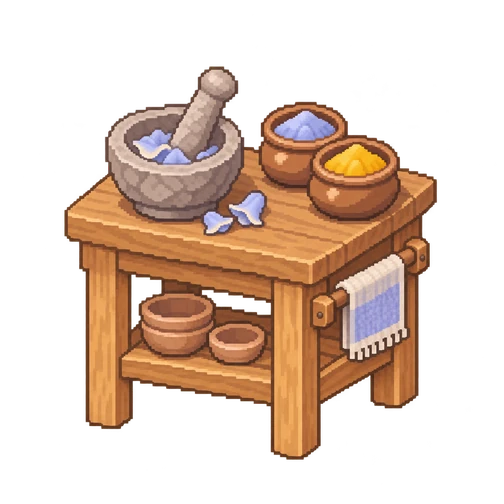

GAME DESIGN PORTFOLIO / ISLE OF VERDURE
작은 정원에서 시작되는,
섬의 회복.
발견하고, 돌보고, 함께 가꾸는 힐링 가드닝 시뮬레이션
탐험 지도
정원에서 시작해 이슬 숲, 햇살 초원, 안개 습지를 탐험합니다. 고대의 숲은 추후 확장 지역입니다.
보랏빛 오염
탐험 순서
상점
아이템
씨앗·기초 재료 구매 시안
가구
재료 판매 단가
단위는 개당 골드(G)입니다.
판매와 배치 규칙
펫 뽑기
숲의 친구 소환에서 동물 친구와 전용 장비를 만나요.
업적과 지역 숙련도
지역마다 복원 달성과제 6개와 장기 업적 5개를 달성해 숙련도 100점을 채워요.
염색꽃 과제와 업적 ↘작물 수확 업적
기본 표본의 누적 수확량을 기록해요. 아래에 선택 정화 염색꽃의 별도 기록 조건을 정리했어요.
숙련도는 다음 지역 해금과 별도로 쌓여요.
염색꽃 과제와 업적
선택 정화 대상 · 보상은 플레이테스트용 시안
정원 가구 제작소
목재 가공
가구 레시피의 재료 수량은 플레이테스트용 시안입니다.
제작 전용 가구
이슬빛 꽃받침대 제작 과제 ↗레벨별 제작 가구 시안
도안을 해금한 뒤 제작소에서 재료를 사용해 만들어요.
꽃빛 염색 작업대

무지개 염색재 7종
보라색 염색에는 안개연꽃 꽃잎을 써요. 도감의 안개수술도 정화 재료로 얻을 수 있어요.
염색꽃 4종
위치, 수확량과 확률은 플레이테스트용 시안이에요.
퀘스트
리프와의 첫 만남부터 정원 우편함에 도착하는 일일·주간 과제까지 살펴보세요.
퀘스트 기획 의도
튜토리얼 퀘스트
일일 퀘스트 · 리프의 부탁
주간 퀘스트
❧ BOTANICAL COLLECTION 식물 표본집
식물 카드를 선택해 기획 정보를 살펴보세요THE HERBARIUM
섬에서 만난 식물들
전체 기획 종
ISLE OF VERDURE— 01 —
✧ 식물 그림은 기획 이해를 돕는 콘셉트 시안입니다.재배와 수집을 기록하는 식물 도감
전체 식물 기획 종
GARDENING SYSTEM
↗한 번의 재배, 다음 파종
물주기 · 성장 · 수확의 순환
PLANT COLLECTION
↗발견을 이어 가는 수집
등급 · 크기 · 지역별 식물
CODEX & INTERFACE
↗책을 펼치듯 읽는 도감
정보 구성과 발견의 기록
❧ ANIMAL COMPANIONS 동물 친구 도감
친구 카드를 선택해 도감 기록을 살펴보세요✧ 동물 그림과 캐릭터 설정은 콘셉트 시안입니다.정원을 함께 돌보는 열 명의 작은 친구
ANIMAL COMPANIONS
↗배치로 정하는 관리 역할
모서리 배치 · 등급별 2~9칸 관리
ART DIRECTION
↗친구마다 다른 실루엣
종별 구조와 부드러운 손그림
COLLECTION ECONOMY
↗새로운 만남으로 이어지는 수확
재료 선택 · 합성 · 동물 소환